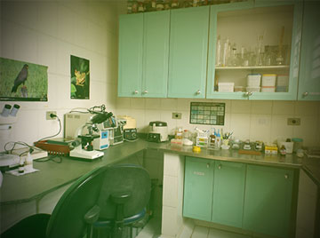

O Zoológico de Guarulhos, mantém cerca de 500 animais, de 100 diferentes espécies, priorizando a fauna nacional, com 91% de espécies nativas.

O Zoo possui uma área de mata e lagos que atraem muitas espécies de aves de vida livre, que podem ser observadas e fotografadas facilmente.



O Zoo de Guarulhos mantém uma rica vegetação com árvores exóticas e nativas que proporciona uma linda paisagem e ainda contribui com a alimentação das nossas.

O Zoo de Guarulhos desenvolve pesquisas em áreas da medicina veterinária e biologia por seu corpo técnico, e também participa de projetos de outras instituições, como programas de mestrado, doutorado e iniciação.

Aqui você vai encontrar lindos desenhos para colorir, além de aprender como desenhar alguns animais e fazer dobraduras e máscaras.